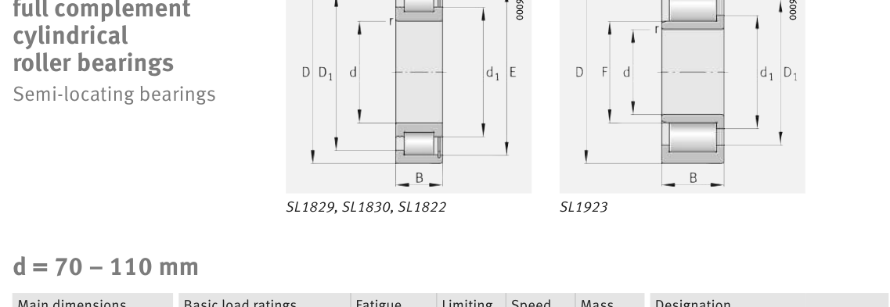

Original catalogue drawing - FAG Schaeffler HR 1, page 516

Scanned from the manufacturer catalogue page listing this part number. All part numbers printed on that table share the same drawing.
Scale cross-section
Blue = inner / outer ring, yellow = rolling element. Drawn to scale from this part's own
dimensions for selection reference only - not a manufacturing or assembly drawing.
Dimension table (mm / inch)
Symbol
Dimension
mm
inch
d
Bore diameter
85
3.3465
D
Outside diameter
180
7.0866
B
Inner-ring / bearing width
60
2.3622
r
Chamfer (min)
3
0.1181
F
Roller-set bore dia.
107
4.2126
Notes
Weights are given in kg. Load ratings are shown in both the original catalogue units and the converted value (1 N = 0.2248 lbf). Data is provided for selection reference only - confirm against the latest official catalogue before ordering.
Main dimensions
Bore d (mm)
85
Outside dia. D (mm)
180
Width B (mm)
60
Inner-ring OD d1 (mm)
118.2
Inner-ring shoulder dia. D1 (mm)
150.9
Dimension F (mm)
107
Dimension s (mm)
4
Load ratings & speeds
Basic dynamic load rating Cr (lbs)
128141
Basic static load rating Cor (lbs)
137133
Basic dynamic load rating Cr (N)
570000
Basic static load rating C0r (N)
610000
Fatigue limit load Cur (N)
107000
Limiting speed nG (rpm)
2,410
Reference speed nB (rpm)
1,710
Weight
Weight (kg)
7.34
Mounting dimensions (fillets / shoulders)
Housing fillet r max (mm)
3
Shaft shoulder da (mm)
107
Shaft shoulder dc (mm)
118
Housing shoulder Da (mm)
150.5
Housing fillet ra max (mm)
3
Bearing life (ISO 281 basic rating life)
C / P
Equivalent load P (N)
L10 (106 rev)
L10h at 800 rpm
4
142,500
102
2,117
6
95,000
392
8,177
8
71,250
1,024
21,333
10
57,000
2,154
44,884
15
38,000
8,323
173,406
Basic rating life per ISO 281: L10 = (C/P)10/3 with C = 570,000 N. Hours = L10 x 106 / (60n). Life-modification factors for lubrication, contamination and temperature (aISO) are not included.
Source & traceability
Brand
FAG
Source catalogue
FAG / Schaeffler Rolling Bearings HR 1
Catalogue page
p.516 (dimensions)
Load ratings in newtons, fatigue limit load Cur, limiting speed nG and reference speed nB.
Send us the quantity you need and we will come back with price and
lead time, normally within 24 hours. Equivalent parts from other brands can be quoted at the same time.